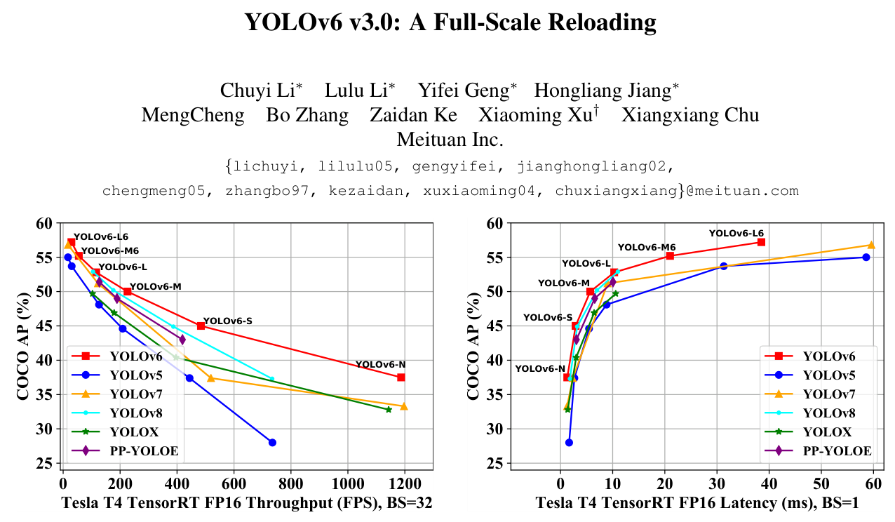
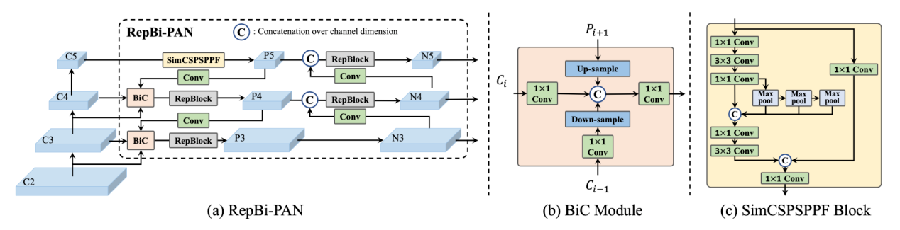
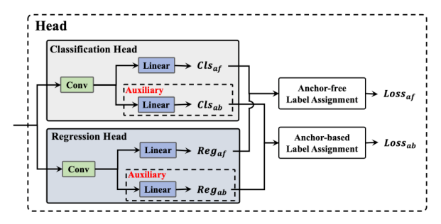

YOLOv6 v3.0: 전면적 재장전
YOLOv6 v3.0: A Full-Scale Reloading
Meituan에서 발표한 YOLOv6 v3.0은 실시간 객체 탐지(real-time object detection)의 산업적 배포 성능을 극대화하기 위해 네트워크 아키텍처와 학습 전략을 전면 개편한 버전입니다.
- 네트워크 설계 혁신 (RepBi-PAN): 양방향 연결 모듈(BiC, Bi-directional Concatenation)로 하향식 경로의 저수준 위치 정보를 보강하고, SimCSPSPPF 블록으로 속도 저하를 거의 일으키지 않으면서 표현력을 강화했습니다. 또한 백본·넥에 6번째 스테이지(C6)를 추가한 고해상도(1280×1280) 모델군(N6/S6/M6/L6)을 도입했습니다.
- 앵커 보조 학습 (AAT, Anchor-Aided Training): 학습 시에만 앵커 기반(anchor-based) 보조 분기를 분류·회귀 헤드에 결합하여 두 패러다임의 장점을 취하고, 추론 시에는 보조 분기를 제거해 속도 저하 없이 정확도를 높였습니다.
- 자가 증류 및 분리된 위치 증류 (DLD, Decoupled Localization Distillation): 코사인 가중치 감쇠(cosine weight decay) 기반 자가 증류와, 소형 모델을 위한 DFL(Distribution Focal Loss) 기반 보조 회귀 분기 증류 전략을 통해 추론 속도를 유지하면서 성능을 끌어올렸습니다.
- 주요 성능 (COCO val, Tesla T4 TensorRT FP16): YOLOv6-N 37.5% AP (1187 FPS), YOLOv6-S 45.0% AP (484 FPS), YOLOv6-M 50.0% AP (226 FPS), YOLOv6-L 52.8% AP (116 FPS)를 달성했으며, 고해상도 모델 YOLOv6-L6는 57.2% AP로 YOLOv7-E6E 대비 AP +0.4%, 배치 크기 1 기준 속도 63% 향상을 기록했습니다.
초록 (Abstract)
첫 두 번의 릴리스 이후 YOLO 커뮤니티는 큰 호응을 보내왔다. 2023년 계묘년(토끼의 해) 춘절을 맞이하여, 네트워크 아키텍처와 학습 방식(training scheme) 전반에 걸쳐 다수의 새로운 개선 사항을 적용한 YOLOv6의 전면 개편 버전을 공개한다. 이번 릴리스는 YOLOv6 v3.0으로 명명되었다.
성능을 개략적으로 살펴보면, NVIDIA Tesla T4 GPU 환경에서 측정했을 때 YOLOv6-N은 1187 FPS의 처리량(throughput)으로 COCO 데이터셋에서 37.5% AP를 달성한다. YOLOv6-S는 484 FPS에서 45.0% AP를 기록하며 동일 체급의 주류 탐지기(YOLOv5-S, YOLOv8-S, YOLOX-S, PPYOLOE-S)를 능가한다. 한편 YOLOv6-M/L 역시 유사한 추론 속도에서 다른 탐지기보다 더 높은 정확도(각각 50.0% / 52.8%)를 달성한다. 나아가 백본(backbone)과 넥(neck)을 확장한 설계를 통해 YOLOv6-L6는 실시간 객체 탐지 분야에서 최고 수준의 정확도(state-of-the-art)를 달성한다. 각 개선 요소의 유효성을 검증하기 위해 광범위한 실험을 면밀히 수행했다. 코드는 https://github.com/meituan/YOLOv6에 공개되어 있다.
1. 서론 (Introduction)
YOLO 시리즈는 속도와 정확도 사이의 뛰어난 균형 덕분에 산업 응용 분야에서 가장 널리 사용되는 객체 탐지 프레임워크로 자리 잡았다. YOLO 시리즈의 선구적인 연구인 YOLOv1~v3 [12–14]는 1단계 탐지기(one-stage detector)의 새로운 지평을 열었고, 이후 상당한 개선이 이어졌다. YOLOv4 [1]는 탐지 프레임워크를 백본(backbone), 넥(neck), 헤드(head)의 여러 독립된 구성 요소로 재정리하고, 당시의 bag-of-freebies 및 bag-of-specials 기법들을 검증하여 단일 GPU에서 학습하기에 적합한 프레임워크를 설계했다. 현재는 YOLOv5 [5], YOLOX [3], PPYOLOE [17], YOLOv7 [16], 그리고 가장 최근의 YOLOv8 [6]이 배포 효율성이 높은 탐지기 후보군으로 경쟁하고 있다.
이번 릴리스에서는 네트워크 설계와 학습 전략을 대대적으로 쇄신했다. 동일 체급의 경쟁 모델들과 YOLOv6를 비교한 결과를 그림 1에 제시한다. YOLOv6 v3.0의 새로운 특징은 다음과 같이 요약된다.

- 정확한 위치 추정 신호(localization signals)를 제공하기 위해 탐지기의 넥(neck)을 양방향 연결(BiC, Bi-directional Concatenation) 모듈로 새롭게 설계한다. 또한 SPPF [5]를 간소화하여 SimCSPSPPF 블록을 구성함으로써 속도 저하를 거의 일으키지 않으면서 성능 향상을 달성한다.
- 추론 효율성에는 전혀 영향을 주지 않으면서 앵커 기반(anchor-based) 방식과 앵커 프리(anchor-free) 방식의 장점을 모두 취할 수 있는 앵커 보조 학습(AAT, Anchor-Aided Training) 전략을 제안한다.
- 백본과 넥에 하나의 스테이지(stage)를 추가해 모델 깊이를 확장함으로써, 고해상도 입력 조건의 COCO 데이터셋에서 새로운 최고 성능을 달성하도록 모델 역량을 강화한다.
- YOLOv6 소형 모델의 성능을 끌어올리기 위한 새로운 자가 증류(self-distillation) 전략을 도입한다. 학습 중에는 DFL(Distribution Focal Loss) [8]을 위한 무거운 분기를 강화된 보조 회귀 분기(auxiliary regression branch)로 활용하고, 추론 시에는 이를 제거하여 뚜렷한 속도 저하를 방지한다.
2. 방법론 (Method)
2.1. 네트워크 설계 (Network Design)
실제로 다중 스케일(multiple scales)에서의 특징 통합(feature integration)은 객체 탐지에서 핵심적이고 효과적인 요소임이 입증되어 왔다. 특징 피라미드 네트워크(FPN, Feature Pyramid Network) [9]는 하향식 경로(top-down pathway)를 통해 고수준 의미 특징(high-level semantic features)과 저수준 특징(low-level features)을 결합하여 더욱 정확한 위치 추정을 제공한다. 이후 계층적 특징 표현 능력을 높이기 위해 양방향 FPN(Bi-directional FPN)에 관한 여러 연구 [2, 4, 10, 15]가 이어졌다. PANet [10]은 FPN 위에 상향식 경로(bottom-up pathway)를 추가해 저수준 특징과 최상위 특징 간의 정보 전달 경로를 단축함으로써, 저수준 특징의 정확한 신호 전파를 촉진했다. BiFPN [15]은 입력 특징별 학습 가능한 가중치(learnable weights)를 도입하고 PAN을 단순화하여 높은 효율성과 향상된 성능을 얻었다. PRB-FPN [2]은 양방향 융합이 포함된 병렬 FP 구조와 관련 개선 사항을 통해 정확한 위치 추정을 위한 고품질 특징을 보존하도록 설계되었다.

이러한 연구들에 착안하여, 향상된 PAN(enhanced-PAN)을 탐지 넥으로 설계한다. 과도한 연산 부담을 유발하지 않으면서 위치 추정 신호를 보강하기 위해, 인접한 3개 계층의 특징 맵(feature maps)을 통합하는 양방향 연결(BiC, Bi-directional Concatenation) 모듈을 제안한다. 이 모듈은 백본의 추가적인 저수준 특징 $C_{i-1}$을 $P_i$에 융합한다(그림 2 참조). 이를 통해 더욱 정확한 위치 추정 신호를 보존할 수 있으며, 이는 작은 객체(small objects)의 위치 추정에 매우 중요하다.
또한 SPPF 블록 [5]을 간소한 CSP 형태로 변형한 SimCSPSPPF 블록을 도입하여 표현 능력을 강화한다. 구체적으로, [16]의 SimSPPCSPC 블록을 수정하여 은닉층(hidden layers)의 채널 수를 축소하고 공간 피라미드 풀링(spatial pyramid pooling)을 재정비한다. 이와 더불어 기존 CSPBlock을 소형 모델에서는 RepBlock으로, 대형 모델에서는 CSPStackRep Block으로 업그레이드하고 그에 맞게 너비와 깊이를 조정한다. 이렇게 구성된 YOLOv6의 넥은 RepBi-PAN으로 명명하며, 전체 프레임워크는 그림 2에 나타나 있다.
2.2. 앵커 보조 학습 (Anchor-Aided Training)
YOLOv6는 더 빠른 추론 속도를 추구하기 위해 앵커 프리(anchor-free) 탐지기 구조를 채택하고 있다. 그러나 실험 결과, 동일한 설정에서 YOLOv6-N에 대해 앵커 기반(anchor-based) 패러다임이 앵커 프리 방식 대비 추가적인 성능 향상을 가져온다는 점을 확인했다(표 1 참조). 게다가 YOLOv6 초기 버전에서도 학습 안정화를 위해 앵커 기반 ATSS [18]를 워밍업(warm-up) 레이블 할당 전략으로 채택한 바 있다.
| 패러다임 (Paradigm) | $\text{AP}^{\text{val}}$ | $\text{AP}_{s}$ | $\text{AP}_{m}$ | $\text{AP}_{l}$ |
|---|---|---|---|---|
| Anchor-free | 35.5% | 16.0% | 39.5% | 51.0% |
| Anchor-based | 35.6% | 17.2% | 39.8% | 52.1% |
이러한 관찰을 바탕으로, 앵커 기반과 앵커 프리 패러다임의 장점을 결합하기 위해 앵커 기반 보조 분기(anchor-based auxiliary branches)를 도입하는 앵커 보조 학습(AAT, Anchor-Aided Training)을 제안한다. 이 보조 분기는 분류 헤드(classification head)와 회귀 헤드(regression head) 모두에 적용된다. 그림 3은 보조 분기가 포함된 탐지 헤드 구조를 보여준다.

학습 단계에서는 보조 분기와 앵커 프리 분기가 각각 독립적인 손실(loss)로 학습하지만, 역전파 신호는 함께 전파된다. 따라서 보조 분기에서 생성된 추가적인 내재 유도 정보(embedded guidance information)가 주 앵커 프리 헤드(main anchor-free heads)에 통합된다. 주목할 점은 추론 시 보조 분기가 제거되므로, 추론 속도를 저하시키지 않고도 정확도를 향상시킬 수 있다는 점이다.
2.3. 자가 증류 (Self-distillation)
YOLOv6 초기 버전에서는 자가 증류(self-distillation)가 대형 모델(즉, YOLOv6-M/L)에만 도입되었으며, 교사(teacher) 모델과 학생(student) 모델의 클래스 예측 간 KL-발산(KL-divergence)을 최소화하는 기본 지식 증류(vanilla knowledge distillation) 기법이 적용되었다. 동시에 [19]와 유사하게 바운딩 박스 회귀(box regression)에 대한 자가 증류를 수행하기 위해 회귀 손실로 DFL [8]이 채택되었다.
지식 증류 손실(knowledge distillation loss)은 다음과 같이 수식화된다:
$$ \mathcal{L}_{KD} = \mathrm{KL}(p_{t}^{cls} \parallel p_{s}^{cls}) + \mathrm{KL}(p_{t}^{reg} \parallel p_{s}^{reg}), \tag{1} $$여기서 $p_{t}^{cls}$와 $p_{s}^{cls}$는 각각 교사 모델과 학생 모델의 클래스 예측이며, 이에 상응하여 $p_{t}^{reg}$와 $p_{s}^{reg}$는 박스 회귀 예측이다. 이제 전체 손실 함수는 다음과 같이 정의된다:
$$ \mathcal{L}_{total} = \mathcal{L}_{det} + \alpha \mathcal{L}_{KD}, \tag{2} $$여기서 $\mathcal{L}_{det}$는 예측값과 레이블로 계산되는 탐지 손실(detection loss)이다. 하이퍼파라미터 $\alpha$는 두 손실 간의 균형을 맞추기 위해 도입되었다. 학습 초기 단계에서는 교사 모델의 소프트 레이블(soft labels)이 학습하기 더 쉽다. 하지만 학습이 진행됨에 따라 학생 모델의 성능이 교사 모델 수준에 도달하므로, 하드 레이블(hard labels)이 학생 모델에 더 큰 도움을 주게 된다. 이에 따라 하드 레이블과 교사 모델의 소프트 레이블에서 얻는 정보를 동적으로 조절하기 위해 $\alpha$에 코사인 가중치 감쇠(cosine weight decay)를 적용한다. $\alpha$의 수식은 다음과 같다:
$$ \alpha = -0.99 \times \left(\frac{1 - \cos(\pi \cdot E_i / E_{max})}{2}\right) + 1, \tag{3} $$여기서 $E_i$는 현재 학습 에포크(epoch)를, $E_{max}$는 최대 학습 에포크 수를 나타낸다.
주목할 점은 DFL [8]을 도입하면 회귀 분기에 추가 파라미터가 필요해져 소형 모델의 추론 속도에 상당한 영향을 미친다는 것이다. 이를 해결하기 위해 소형 모델의 추론 속도 저하 없이 성능을 끌어올리는 분리된 위치 증류(DLD, Decoupled Localization Distillation)를 특별히 설계했다. 구체적으로, DFL을 통합하기 위해 무거운 보조 강화 회귀 분기(heavy auxiliary enhanced regression branch)를 추가한다. 자가 증류 과정에서 학생 모델은 기본 회귀 분기(naïve regression branch)와 강화 회귀 분기를 모두 갖추는 반면, 교사 모델은 보조 분기만 사용한다. 이때 기본 회귀 분기는 오직 하드 레이블로만 학습되며, 보조 분기는 교사 모델의 신호와 하드 레이블 모두에 따라 업데이트된다. 증류가 끝난 후에는 기본 회귀 분기만 남기고 보조 분기는 제거한다. 이 전략을 통해, 추론 효율성에 영향을 주지 않으면서도 증류 과정에서 DFL용 무거운 회귀 분기가 지니는 이점을 상당 부분 유지할 수 있다.
3. 실험 (Experiments)
3.1. 성능 비교 (Comparisons)
평가는 배포 시의 처리량(throughput)과 GPU 지연 시간(latency)에 초점을 맞춘 YOLOv6 초기 버전 [7]과 일관된 방식으로 진행되었다. 모든 공식 모델의 속도 성능은 동일한 Tesla T4 GPU와 TensorRT [11] 환경에서 FP16 정밀도로 측정했다. 업그레이드된 YOLOv6를 YOLOv5 [5], YOLOX [3], PPYOLOE [17], YOLOv7 [16], YOLOv8 [6]과 비교했다. 참고로 YOLOv7-Tiny의 성능은 공식 오픈소스 코드와 가중치를 사용하여 입력 크기 416 및 640에서 재평가했다.
비교 결과는 표 2 및 그림 1에 제시되어 있다. YOLOv5-N 및 YOLOv7-Tiny(입력 크기 416)와 비교할 때, YOLOv6-N은 각각 9.5% 및 4.2%의 큰 폭의 AP 향상을 달성했으며, 처리량과 지연 시간 모두에서 최고 수준의 속도를 보였다. YOLOX-S 및 PPYOLOE-S와 비교하면 YOLOv6-S는 더 높은 속도에서 AP를 각각 3.5% / 0.9% 개선했다. YOLOv6-M은 유사한 속도에서 YOLOv5-M보다 4.6% 더 높은 AP를 기록했고, YOLOX-M / PPYOLOE-M보다 더 빠른 속도로 3.1% / 1.0% 더 높은 AP를 달성했다. 또한 YOLOv6-M은 YOLOv5-L보다도 더 정확하고 빠르다. YOLOv6-L은 동일한 지연 시간 조건에서 YOLOX-L / PPYOLOE-L보다 각각 3.1% / 1.4% 더 정확하다. YOLOv8 시리즈와 비교하면, YOLOv6는 모든 모델 크기에서 정확도와 지연 시간 측면에서 유사한 성능을 보이면서도 처리량(throughput)에서는 훨씬 우수한 성능을 제공한다.
| 모델 (Method) | 입력 크기 | $\text{AP}^{\text{val}}$ | $\text{AP}_{50}^{\text{val}}$ | FPS (bs=1) | FPS (bs=32) | Latency (bs=1) | Params | FLOPs |
|---|---|---|---|---|---|---|---|---|
| YOLOv5-N [5] | 640 | 28.0% | 45.7% | 602 | 735 | 1.7 ms | 1.9 M | 4.5 G |
| YOLOv5-S [5] | 640 | 37.4% | 56.8% | 376 | 444 | 2.7 ms | 7.2 M | 16.5 G |
| YOLOv5-M [5] | 640 | 45.4% | 64.1% | 182 | 209 | 5.5 ms | 21.2 M | 49.0 G |
| YOLOv5-L [5] | 640 | 49.0% | 67.3% | 113 | 126 | 8.8 ms | 46.5 M | 109.1 G |
| YOLOv5-N6 [5] | 1280 | 36.0% | 54.4% | 172 | 175 | 5.8 ms | 3.2 M | 18.4 G |
| YOLOv5-S6 [5] | 1280 | 44.8% | 63.7% | 103 | 103 | 9.7 ms | 12.6 M | 67.2 G |
| YOLOv5-M6 [5] | 1280 | 51.3% | 69.3% | 49 | 48 | 20.1 ms | 35.7 M | 200.0 G |
| YOLOv5-L6 [5] | 1280 | 53.7% | 71.3% | 32 | 30 | 31.3 ms | 76.8 M | 445.6 G |
| YOLOv5-X6 [5] | 1280 | 55.0% | 72.7% | 17 | 17 | 58.6 ms | 140.7 M | 839.2 G |
| YOLOX-Tiny [3] | 416 | 32.8% | 50.3%* | 717 | 1143 | 1.4 ms | 5.1 M | 6.5 G |
| YOLOX-S [3] | 640 | 40.5% | 59.3%* | 333 | 396 | 3.0 ms | 9.0 M | 26.8 G |
| YOLOX-M [3] | 640 | 46.9% | 65.6%* | 155 | 179 | 6.4 ms | 25.3 M | 73.8 G |
| YOLOX-L [3] | 640 | 49.7% | 68.0%* | 94 | 103 | 10.6 ms | 54.2 M | 155.6 G |
| PPYOLOE-S [17] | 640 | 43.1% | 59.6% | 327 | 419 | 3.1 ms | 7.9 M | 17.4 G |
| PPYOLOE-M [17] | 640 | 49.0% | 65.9% | 152 | 189 | 6.6 ms | 23.4 M | 49.9 G |
| PPYOLOE-L [17] | 640 | 51.4% | 68.6% | 101 | 127 | 10.1 ms | 52.2 M | 110.1 G |
| YOLOv7-Tiny [16] | 416 | 33.3%* | 49.9%* | 787 | 1196 | 1.3 ms | 6.2 M | 5.8 G |
| YOLOv7-Tiny [16] | 640 | 37.4%* | 55.2%* | 424 | 519 | 2.4 ms | 6.2 M | 13.7 G* |
| YOLOv7 [16] | 640 | 51.2% | 69.7%* | 110 | 122 | 9.0 ms | 36.9 M | 104.7 G |
| YOLOv7-E6E [16] | 1280 | 56.8% | 74.4%* | 16 | 17 | 59.6 ms | 151.7 M | 843.2 G |
| YOLOv8-N [6] | 640 | 37.3% | 52.6%* | 561 | 734 | 1.8 ms | 3.2 M | 8.7 G |
| YOLOv8-S [6] | 640 | 44.9% | 61.8%* | 311 | 387 | 3.2 ms | 11.2 M | 28.6 G |
| YOLOv8-M [6] | 640 | 50.2% | 67.2%* | 143 | 176 | 7.0 ms | 25.9 M | 78.9 G |
| YOLOv8-L [6] | 640 | 52.9% | 69.8%* | 91 | 105 | 11.0 ms | 43.7 M | 165.2 G |
| YOLOv6-N | 640 | 37.0% / 37.5%‡ | 52.7% / 53.1%‡ | 779 | 1187 | 1.3 ms | 4.7 M | 11.4 G |
| YOLOv6-S | 640 | 44.3% / 45.0%‡ | 61.2% / 61.8%‡ | 339 | 484 | 2.9 ms | 18.5 M | 45.3 G |
| YOLOv6-M | 640 | 49.1% / 50.0%‡ | 66.1% / 66.9%‡ | 175 | 226 | 5.7 ms | 34.9 M | 85.8 G |
| YOLOv6-L | 640 | 51.8% / 52.8%‡ | 69.2% / 70.3%‡ | 98 | 116 | 10.3 ms | 59.6 M | 150.7 G |
| YOLOv6-N6 | 1280 | 44.9% | 61.5% | 228 | 281 | 4.4 ms | 10.4 M | 49.8 G |
| YOLOv6-S6 | 1280 | 50.3% | 67.7% | 98 | 108 | 10.2 ms | 41.4 M | 198.0 G |
| YOLOv6-M6 | 1280 | 55.2%‡ | 72.4%‡ | 47 | 55 | 21.0 ms | 79.6 M | 379.5 G |
| YOLOv6-L6 | 1280 | 57.2%‡ | 74.5%‡ | 26 | 29 | 38.5 ms | 140.4 M | 673.4 G |
최신 최고 성능 방법들과 비교하기 위해, [5]를 따라 백본 최상단에 추가 스테이지를 더해 초대형 객체(extra-large objects)를 탐지하기 위한 더 높은 수준의 특징($C_6$)을 생성하도록 했다. 넥 역시 이에 맞춰 확장되었다. $C_6$ 특징을 갖춘 모든 크기의 YOLOv6 모델은 각각 YOLOv6-N6 / S6 / M6 / L6로 명명했다. 또한 이미지 입력 해상도를 640에서 1280으로 조정했다. 특징 스트라이드(feature strides)는 8부터 64까지 분포하여, 고해상도 이미지에서 매우 작은 객체와 초대형 객체를 모두 정확하게 탐지하는 데 유리하다. 표 2의 실험 결과에서 볼 수 있듯, 확장된 YOLOv6는 상당한 정확도 향상을 달성했다. 확장된 YOLOv5 시리즈(YOLOv5-N6/S6/M6/L6/X6)와 비교해 제안한 모델은 유사한 추론 속도에서 훨씬 높은 AP를 기록했다. 특히 최신 최고 성능 모델인 YOLOv7-E6E와 비교했을 때, YOLOv6-L6는 AP를 0.4% 향상시켰으며 배치 크기 1 기준으로 63% 더 빠르게 동작한다.
3.2. 절제 연구 (Ablation Study)
표 3의 실험 결과는 본 연구에서 제안한 모든 개선 요소의 유효성을 보여준다. BiC와 SimCSPSPPF로 쇄신된 네트워크는 AP를 0.6% 향상시켰다. 여기에 AAT와 DLD를 순차적으로 적용함에 따라 정확도가 각각 0.3%, 0.7%씩 추가로 개선되었다.
| BiC + SimCSPSPPF | AAT | DLD | $\text{AP}^{\text{val}}$ |
|---|---|---|---|
| ✗ | ✗ | ✗ | 43.5% |
| ✓ | ✗ | ✗ | 44.1% |
| ✓ | ✓ | ✗ | 44.4% |
| ✓ | ✓ | ✓ | 45.1% |
3.2.1. 네트워크 설계 (Network Design)
제안한 BiC 모듈의 효과를 검증하기 위해 일련의 실험을 수행했다. 표 4에서 확인할 수 있듯이, PAN의 하향식 경로(top-down pathway)에만 BiC 모듈을 적용할 경우 효율성 손실은 거의 없으면서도 YOLOv6-S/L에서 각각 0.6% / 0.4%의 AP 향상을 얻을 수 있다. 반면, 상향식 경로(bottom-up pathway)에도 BiC 모듈을 도입하려 했을 때는 정확도가 향상되지 않았다. 그 이유는 상향식 경로의 BiC 모듈이 서로 다른 스케일의 특징들에 대해 탐지 헤드에 혼란을 유발하기 때문인 것으로 추정된다. 따라서 하향식 경로에만 BiC 모듈을 채택했다. 아울러 실험 결과, BiC 모듈이 작은 객체 탐지 성능을 눈에 띄게 향상시키는 것으로 나타났다. YOLOv6-S와 YOLOv6-L 모두에서 작은 객체 탐지 성능($\text{AP}_s$)이 1.8% 개선되었다.
| 모델 (Model) | BiC (Bottom-up) | BiC (Top-down) | $\text{AP}^{\text{val}}$ | $\text{AP}_{s}$ | $\text{AP}_{m}$ | $\text{AP}_{l}$ | FPS (bs=32) |
|---|---|---|---|---|---|---|---|
| YOLOv6-S | ✗ | ✗ | 43.1% | 23.4% | 48.0% | 59.9% | 513 |
| ✗ | ✓ | 43.7% | 25.2% | 48.7% | 60.4% | 492 | |
| ✓ | ✓ | 43.7% | 25.0% | 48.7% | 59.7% | 485 | |
| YOLOv6-L | ✗ | ✗ | 50.9% | 32.4% | 56.0% | 68.0% | 125 |
| ✗ | ✓ | 51.3% | 34.2% | 56.5% | 67.6% | 120 | |
| ✓ | ✓ | 51.1% | 33.6% | 56.7% | 67.9% | 119 |
나아가 SPPF [5]와 SPPCSPC [16]의 간소화 변형(각각 SimSPPF, SimSPPCSPC로 표기) 및 제안한 SimCSPSPPF 블록을 포함해 다양한 유형의 SPP 블록이 미치는 영향을 탐구했다. 추가로 백본의 상위 3개 특징 맵($P_3, P_4, P_5$)에 SimSPPF 블록을 모두 적용해 효과를 검증했으며, 이를 SimSPPF*3로 표기했다. 실험 결과는 표 5에 나타나 있다. SimSPPF를 다수 적용하면 연산 복잡도만 증가할 뿐 정확도 향상은 거의 얻기 어렵다. SimSPPCSPC는 YOLOv6-N/S에서 SimSPPF보다 AP가 각각 1.6% / 0.3% 높지만 추론 속도가 크게 저하된다. 반면, SimSPPF와 비교했을 때 제안한 SimCSPSPPF 버전은 YOLOv6-N/S/M에서 각각 1.1% / 0.4% / 0.1%의 성능 향상을 얻었다. 추론 효율성 측면에서도 SimCSPSPPF 블록은 SimSPPCSPC보다 거의 10% 더 빠르게 실행되며 SimSPPF보다는 약간만 느리다. 정확도와 효율성 간의 더 나은 균형을 위해 YOLOv6-N/S에는 SimCSPSPPF 블록을 도입하고, YOLOv6-M/L에는 SimSPPF 블록을 채택했다.
| 모델 (Model) | SPP 블록 (SPP Blocks) | $\text{AP}^{\text{val}}$ | FPS (bs=32) |
|---|---|---|---|
| YOLOv6-N | SimSPPF [5] | 35.8% | 1190 |
| SimSPPF [5]*3 | 35.9% | 1072 | |
| SimSPPCSPC [16] | 37.4% | 1078 | |
| SimCSPSPPF | 36.9% | 1176 | |
| YOLOv6-S | SimSPPF [5] | 43.7% | 492 |
| SimSPPF [5]*3 | 43.6% | 447 | |
| SimSPPCSPC [16] | 44.0% | 432 | |
| SimCSPSPPF | 44.1% | 477 | |
| YOLOv6-M | SimSPPF [5] | 48.6% | 227 |
| SimCSPSPPF | 48.7% | 218 | |
| YOLOv6-L | SimSPPF [5] | 51.3% | 120 |
| SimCSPSPPF | 51.1% | 117 |
3.2.2. 앵커 보조 학습 (Anchor-Aided Training)
AAT의 장점은 YOLOv6 전반에서 검증되었다. 표 6에 나타난 바와 같이, AAT는 YOLOv6-S/M/L에 대해 각각 약 0.3% / 0.5% / 0.5%의 AP 향상을 가져온다. 특히 YOLOv6-N/S/M에서는 작은 객체에 대한 정확도($\text{AP}_s$)가 크게 향상되었으며, YOLOv6-L에서는 큰 객체에 대한 정확도($\text{AP}_l$)가 한층 더 개선되었다.
| 모델 (Method) | AAT | $\text{AP}^{\text{val}}$ | $\text{AP}_{s}$ | $\text{AP}_{m}$ | $\text{AP}_{l}$ |
|---|---|---|---|---|---|
| YOLOv6-N | ✗ | 36.9% | 17.2% | 41.1% | 52.9% |
| ✓ | 36.9% | 18.7% | 41.2% | 53.0% | |
| YOLOv6-S | ✗ | 44.1% | 24.7% | 48.7% | 61.1% |
| ✓ | 44.4% | 25.4% | 49.6% | 60.2% | |
| YOLOv6-M | ✗ | 48.6% | 29.7% | 53.7% | 65.5% |
| ✓ | 49.1% | 31.1% | 54.0% | 65.4% | |
| YOLOv6-L | ✗ | 51.3% | 34.2% | 56.5% | 67.6% |
| ✓ | 51.8% | 33.4% | 56.8% | 68.8% |
3.2.3. 자가 증류 (Self-distillation)
제안한 자가 증류 기법을 YOLOv6-L에서 검증했다. 자가 증류가 교사 모델을 얻기 위해 한 번의 전체 학습 사이클을 추가로 필요로 한다는 점을 고려해, 공정한 비교를 위해 베이스라인 외에 학습 에포크를 두 배로 늘린(Double epochs) 모델 성능도 함께 확인했다. 표 7에서 보듯, 가중치 감쇠(weight decay) 전략 없이는 베이스라인 대비 성능 향상이 이루어지지 않으며, 학습 에포크를 두 배로 늘리면 과적합(overfitting)으로 인해 오히려 성능이 하락한다. 반면 가중치 감쇠를 도입하면 모델의 AP가 0.6% 향상된다.
| 모델 (Model) | 가중치 감쇠 (Weight Decay) | $\text{AP}^{\text{val}}$ |
|---|---|---|
| Baseline | - | 51.8% |
| Double epochs | - | 51.7% |
| Self-distillation | ✗ | 51.8% |
| Self-distillation | ✓ | 52.4% |
또한 소형 모델을 위해 특별히 설계된 DLD에 대해 YOLOv6-S에서 절제 연구를 진행했다. 대형 모델의 자가 증류 실험과 마찬가지로, 학습 에포크를 두 배로 늘려 학습한 모델과도 결과를 비교했다. 표 8에 제시된 바와 같이 DLD를 적용한 YOLOv6-S는 0.7%의 AP 향상을 달성했으며, 학습 에포크를 두 배로 늘린 경우보다 0.5% 더 우수한 성능을 보였다.
| DLD | Double epochs | $\text{AP}^{\text{val}}$ |
|---|---|---|
| ✗ | ✗ | 44.4% |
| ✗ | ✓ | 44.6% |
| ✓ | ✗ | 45.1% |
4. 결론 (Conclusion)
본 보고서에서는 네트워크 설계와 학습 전략 측면에서 YOLOv6를 업그레이드하여, 실시간 객체 탐지 분야에서 최고 수준의 정확도를 달성하도록 성능을 끌어올렸다. 향후에도 객체 탐지 분야의 연구와 기술 발전에 발맞추어, 응용 친화적인 탐지 프레임워크를 제공하기 위해 YOLOv6의 최적화를 지속적으로 이어갈 것이다.
참고 문헌 (References)
논문에는 총 19편의 참고 문헌이 수록되어 있으며, 주요 핵심 문헌은 다음과 같다:
- YOLO 계열 및 경쟁 탐지기: [12–14] Redmon 등 (YOLOv1, YOLO9000, YOLOv3), [1] Bochkovskiy 등 (YOLOv4, 2020), [5] Jocher (YOLOv5 v6.1, 2022), [3] Ge 등 (YOLOX, 2021), [17] Xu 등 (PP-YOLOE, 2022), [16] Wang 등 (YOLOv7, 2022), [6] Jocher (Ultralytics YOLOv8, 2023), [7] Li 등 (YOLOv6 초기 버전, 2022).
- 특징 피라미드 및 넥 구조: [9] Lin 등 (FPN, 2017), [10] Liu 등 (PANet, 2018), [4] Ghiasi 등 (NAS-FPN, 2019), [15] Tan 등 (EfficientDet / BiFPN, 2020), [2] Chen 등 (PRB-FPN, 2021).
- 손실 함수, 레이블 할당 및 증류·배포: [8] Li 등 (Generalized Focal Loss / DFL, 2020), [18] Zhang 등 (ATSS, 2020), [19] Zheng 등 (Localization Distillation, 2022), [11] NVIDIA (TensorRT, 2018).
부록 A. 상세 지연 시간 및 처리량 벤치마크 (Detailed Latency and Throughput Benchmark)
A.1. 실험 환경 (Setup)
별도의 언급이 없는 한, 보고된 모든 지연 시간은 TensorRT 버전 7.2.1.6을 사용한 NVIDIA Tesla T4 GPU에서 측정되었다. 하드웨어 및 소프트웨어 설정에 따른 편차가 크기 때문에, 모든 모델의 지연 시간과 처리량은 동일한 구성(하드웨어 및 소프트웨어 모두)에서 재측정했다. 참고할 수 있도록 TensorRT 버전을 변경한 일관성 검증 결과(표 9)도 함께 제공하며, 편리한 비교를 위해 V100 GPU에서의 지연 시간(표 10)과 CPU 지연 시간(표 11)도 포함하여 최신 탐지기들의 전반적인 성능 스펙트럼을 제시한다.
A.2. TensorRT 8 환경 T4 GPU 지연 시간 표
표 9에서 확인할 수 있듯이, TensorRT 8.2 환경에서도 YOLOv6 모델의 처리량은 여전히 경쟁 모델들에 필적하는 수준을 유지한다.
| 모델 (Method) | FPS (bs=1) | FPS (bs=32) | Latency (bs=1) |
|---|---|---|---|
| YOLOv5-N [5] | 702 | 843 | 1.4 ms |
| YOLOv5-S [5] | 433 | 515 | 2.3 ms |
| YOLOv5-M [5] | 202 | 235 | 4.9 ms |
| YOLOv5-L [5] | 126 | 137 | 7.9 ms |
| YOLOX-Tiny [3] | 766 | 1393 | 1.3 ms |
| YOLOX-S [3] | 313 | 489 | 2.6 ms |
| YOLOX-M [3] | 159 | 204 | 5.3 ms |
| YOLOX-L [3] | 104 | 117 | 9.0 ms |
| PPYOLOE-S [17] | 357 | 493 | 2.8 ms |
| PPYOLOE-M [17] | 163 | 210 | 6.1 ms |
| PPYOLOE-L [17] | 110 | 145 | 9.1 ms |
| YOLOv7-Tiny [16] | 464 | 568 | 2.1 ms |
| YOLOv7 [16] | 128 | 135 | 7.6 ms |
| YOLOv6-N | 785 | 1215 | 1.3 ms |
| YOLOv6-S | 345 | 498 | 2.9 ms |
| YOLOv6-M | 178 | 238 | 5.6 ms |
| YOLOv6-L | 105 | 125 | 9.5 ms |
A.3. V100 GPU 지연 시간 표
표 10에서 확인할 수 있듯이, V100 GPU 환경에서도 YOLOv6의 속도 이점은 대체로 그대로 유지된다.
| 모델 (Method) | FPS (bs=1) | FPS (bs=32) | Latency (bs=1) |
|---|---|---|---|
| YOLOv5-N [5] | 577 | 1727 | 1.4 ms |
| YOLOv5-S [5] | 449 | 1249 | 1.7 ms |
| YOLOv5-M [5] | 271 | 698 | 3.0 ms |
| YOLOv5-L [5] | 178 | 440 | 4.7 ms |
| YOLOX-Tiny [3] | 569 | 2883 | 1.4 ms |
| YOLOX-S [3] | 386 | 1206 | 2.0 ms |
| YOLOX-M [3] | 245 | 600 | 3.4 ms |
| YOLOX-L [3] | 149 | 361 | 5.6 ms |
| PPYOLOE-S [17] | 322 | 1050 | 2.4 ms |
| PPYOLOE-M [17] | 222 | 566 | 4.0 ms |
| PPYOLOE-L [17] | 153 | 406 | 5.5 ms |
| YOLOv7-Tiny [16] | 453 | 1565 | 1.7 ms |
| YOLOv7 [16] | 182 | 412 | 4.6 ms |
| YOLOv6-N | 646 | 2660 | 1.2 ms |
| YOLOv6-S | 399 | 1330 | 2.0 ms |
| YOLOv6-M | 203 | 676 | 4.4 ms |
| YOLOv6-L | 125 | 385 | 6.8 ms |
A.4. CPU 지연 시간 (CPU Latency)
표 11과 같이, OpenCV DNN(Deep Neural Network)을 사용하여 2.6 GHz Intel Core i7 CPU에서 YOLOv6 모델과 경쟁 모델들의 성능을 평가했다.
| 모델 (Method) | 입력 크기 (Input) | Latency (bs=1) |
|---|---|---|
| YOLOv5-N [5] | 640 | 118.9 ms |
| YOLOv5-S [5] | 640 | 202.2 ms |
| YOLOX-Tiny [3] | 416 | 144.2 ms |
| YOLOX-S [3] | 640 | 164.6 ms |
| YOLOX-M [3] | 640 | 357.9 ms |
| YOLOv7-Tiny [16] | 640 | 137.5 ms |
| YOLOv6-N | 640 | 60.3 ms |
| YOLOv6-S | 640 | 148.0 ms |
| YOLOv6-M | 640 | 269.3 ms |